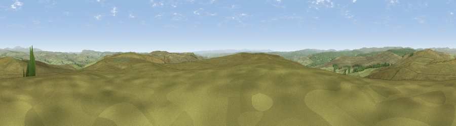

Viewpoint near Greenhaugh
#6771 in England · top 14% of its area beats it · near GreenhaughWhere it is
The exact computed spot (NY 82825 90575). Click the marker for map links.
The view, rendered

A 360° render of this exact spot computed from the terrain model, tree cover and land cover — summer colours, afternoon light, calibrated against photographs of famous viewpoints. Real trees, hedges and buildings will differ in detail.
The panorama
Grey silhouette: terrain skyline in each direction (720 bearings, Earth curvature and refraction included). Dashed green: skyline with trees (+15 m) and buildings (+8 m) as obstacles. Blue strip: how far the ground is visible on each bearing.
Where the view opens
Wedge length = distance to the farthest visible ground on that bearing (vegetation-aware). Rings at 10, 25 and 50 km.
What fills the view
89% grassland · 11% woodland
Angular shares of the visible panorama (visual magnitude), not map area. Landscape diversity 0.17 (0–1 Shannon).
Key numbers
More beautiful places nearby
The staircase of upgrades: each row has a higher view potential than everything closer. Driving times are estimates from straight-line distance, calibrated against real road routing — check an actual route before setting out.
| Place | Direction | Drive | Score |
|---|---|---|---|
| Viewpoint near Greenhaugh | SSW · 1 km | ~2 min | 70.4 |
| Padon Hill | NNW · 2 km | ~6 min | 72.6 |
| Blackman's Law | NW · 11 km | ~21 min | 74.1 |
| Ellis Crag | NW · 13 km | ~24 min | 77.2 |
| Monkside | WNW · 15 km | ~27 min | 78.4 |
| Viewpoint near Hepple | ENE · 20 km | ~34 min | 82.4 |
| Viewpoint c12273_7856 | NNE · 25 km | ~41 min | 83.7 |
| Viewpoint c12396_7887 | NNE · 31 km | ~49 min | 85.7 |
55.20912, -2.27143 · source: screening · position refined by local search. Computed location — check access rights before visiting.